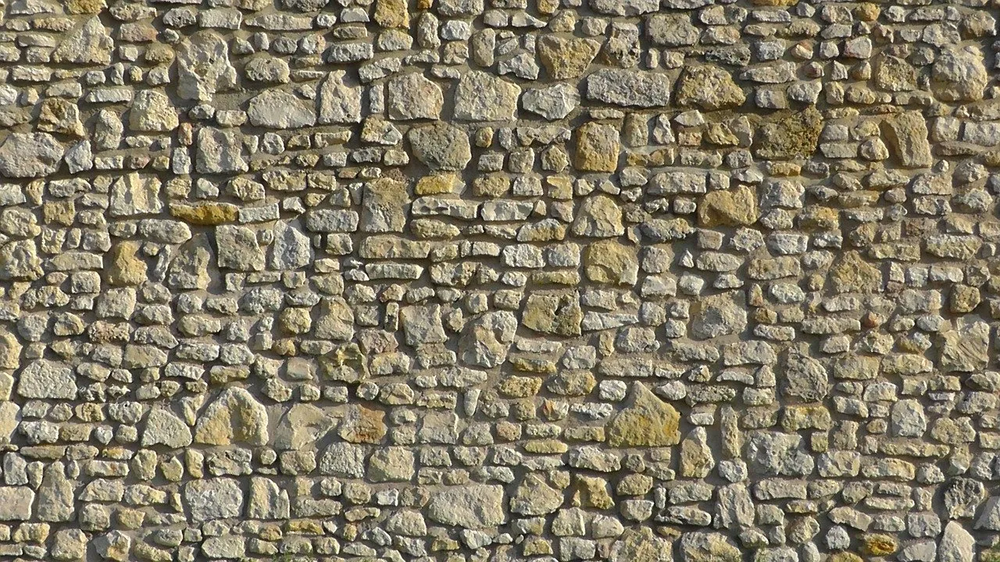
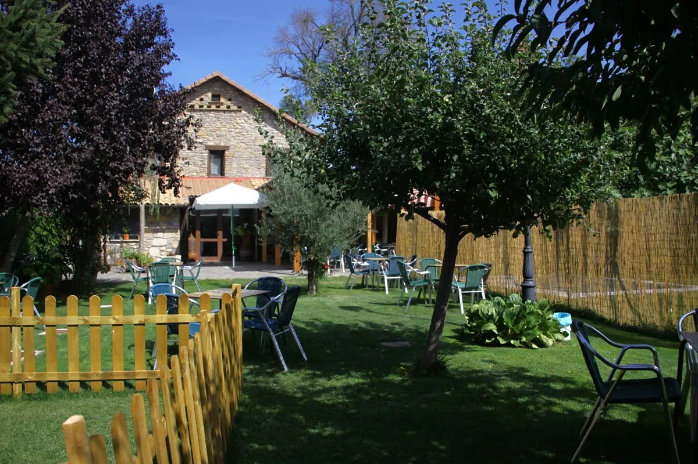
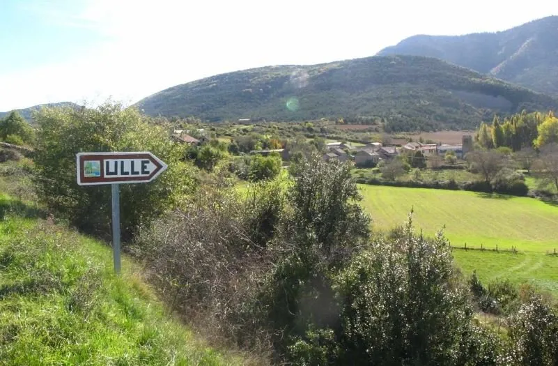
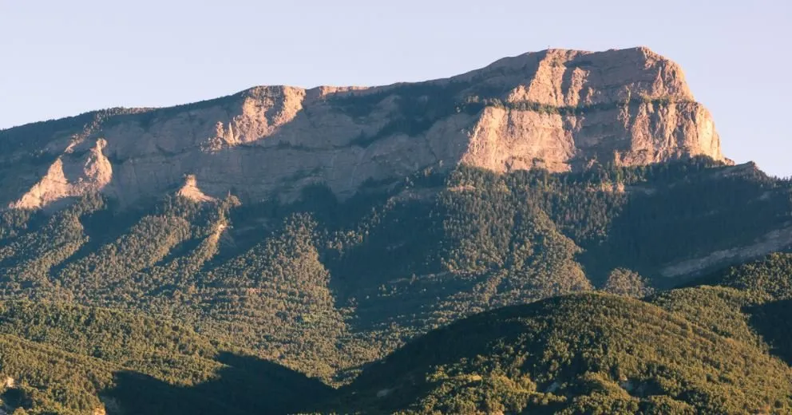

Comedor de la borda
Entre los muros de piedra de la borda, con el calor de la casa en cualquier época del año.

Un asador familiar sobre los cimientos de una borda antigua reformada, en la falda del Monte Oroel.
Estamos a las afueras de Jaca, en plena falda del Monte Oroel, en un pequeño pueblo llamado Ulle. Un lugar tranquilo para comer al estilo aragonés y vasco y disfrutar del paisaje que nos rodea.
Abrimos en 2018 como negocio familiar, con un propósito claro: que quien venga se lleve el aire de este sitio y un buen recuerdo de cómo le atendimos. Aquí la decoración y el sabor van de la mano, y la cocina gira en torno a la brasa: carnes, un buen bacalao, sidra, tortillas.

Dos espacios para elegir según el día y la ocasión.

Entre los muros de piedra de la borda, con el calor de la casa en cualquier época del año.

Al aire de la montaña, en el jardín, con vistas a la Peña Oroel.